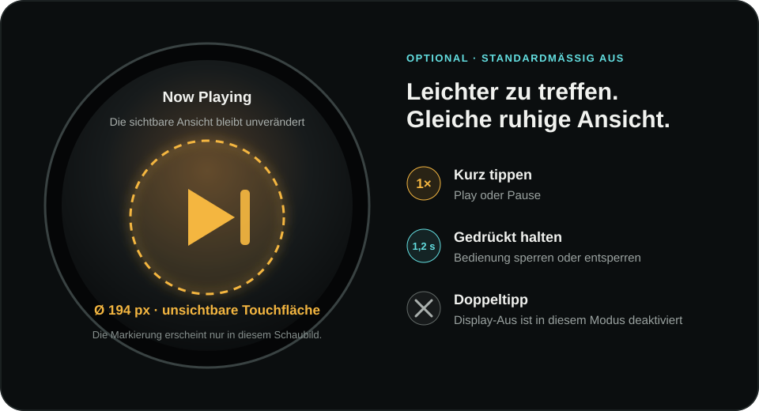
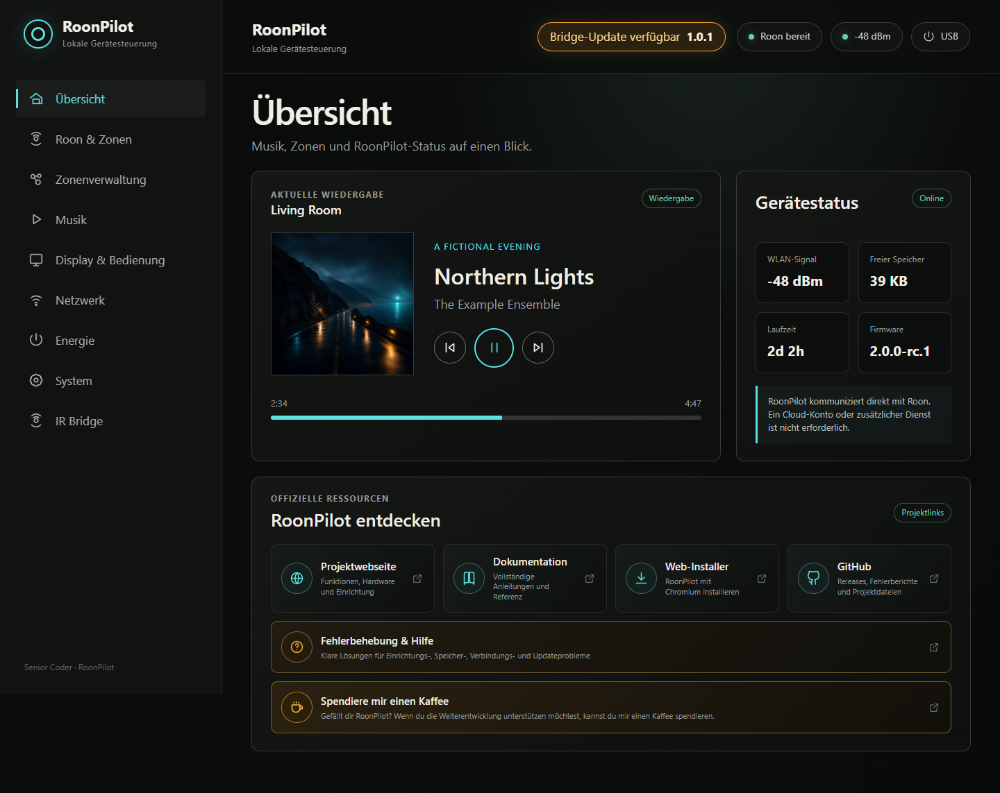

Hauptgerät
RoonPilot
Die Firmware auf dem runden Display installieren und das WLAN erstmals einrichten.
RoonPilot-Video ansehenEine schnelle, haptische Roon-Fernbedienung für das Waveshare ESP32-S3 Knob Touch LCD 1.8. Keine Server-Bridge, Zusatz-App und kein zusätzlicher Dienst sind erforderlich; bei Bedarf lässt sich pro Zone eine optionale IR-Hardwaresteuerung aktivieren.
RoonPilot-Onlineupdates sind vorübergehend gesperrt. Bitte den internen Updater nicht verwenden. Für eine saubere Installation von 2.0.2 den USB-Webinstaller nutzen; er löscht Einstellungen und Kopplungen. IR-Bridge-Onlineupdates bleiben verfügbar.Aktuelle USB-Firmware: 2.0.2. RoonPilot-Onlineupdates sind gesperrt. Beide USB-Webinstaller und Updates der optionalen IR Bridge 1.0.0 bleiben verfügbar. Release Notes zu 2.0.2 und Installationshinweise lesen.

Videoanleitungen Schritt für Schritt
Jede Anleitung zeigt die Browseransichten, die Geräteauswahl und alle weiteren Schritte. Du kannst jederzeit pausieren und in deinem Tempo fortfahren.
Hauptgerät
Die Firmware auf dem runden Display installieren und das WLAN erstmals einrichten.
RoonPilot-Video ansehenOptionaler zweiter Prozessor
Aufgabe der Stromspar-Firmware und Auswahl des richtigen USB-Prozessors.
Companion-Video ansehenOptionale externe Hardware
Bauteile anschließen, das getrennte Board flashen, koppeln und die Fernbedienung anlernen.
IR-Bridge-Video ansehenPrivates Hobbyprojekt · ohne Geschäftsmodell
RoonPilot ist aus Spaß an Musik, Technik und eigener Entwicklung entstanden – ohne kommerzielle Absichten. Es gibt keine Werbung, keine Abonnements und keine versteckten Kosten. RoonPilot übermittelt weder persönliche Daten noch Nutzungs- oder Telemetriedaten an den Entwickler oder an Dritte.
Support und Austausch: im Roon Community Forum oder über GitHub Issues.
Wer sich freiwillig für die investierte Zeit und Arbeit bedanken möchte:
Im Geräteauswahldialog des Webinstallers genügt ein Blick auf den Namen vor der Klammer. Die Ergänzung COM… oder cu.usbmodem… darf abweichen.
Das ist der ESP32-S3 für Display, Touch, Drehring, WLAN und die RoonPilot-Firmware.
Das ist der getrennte klassische Begleitprozessor und nicht das Ziel des RoonPilot-Hauptinstallers.
01
Der Browserdialog übernimmt die Geräteauswahl; vorherige Systemwerkzeuge sind nicht nötig.
Ein reines Ladekabel kann das Display versorgen, aber keine Firmware übertragen.
Chrome oder Edge verwenden, Bestätigungen aktivieren und die Installation starten. Erst dann öffnet sich der Geräteauswahldialog.
Für RoonPilot USB JTAG/serial debug unit wählen. COM… beziehungsweise cu.usbmodem… steht nur ergänzend in Klammern.
Bei USB serial den Dialog offen lassen, USB abziehen, den USB-C-Stecker um 180 Grad drehen und neu verbinden. Der Browser aktualisiert die Auswahl sofort.
02
Der Webinstaller zeigt den passenden USB-Eintrag direkt im Auswahldialog.
Bei der Abfrage Erase device bestätigen. Vorher muss nichts separat gelöscht werden.
USB verbunden lassen, bis Löschen, Schreiben und Prüfen abgeschlossen sind.
Spätere Updates laufen direkt in RoonPilot unter System → Firmware update und behalten die Einstellungen normalerweise bei.
Browser: nur aktuelles Desktop-Chromium mit Web Serial. Gerätewahl: Entscheidend ist der Name vor der Klammer. Der Dialog kann beim Abziehen, Drehen und erneuten Verbinden geöffnet bleiben.
03
Normale Updates benötigen kein USB-Kabel mehr.
Die optionale Companion-Installation vor der Auswahl des USB-Prozessors ansehen.
Companion-Video ansehen04
Ein sauberes Factory-Abbild enthält keine privaten WLAN- oder Roon-Daten.
Mit RoonPilot-Setup-XXXXXX verbinden. Öffnet sich die Anmeldeseite nicht, 192.168.4.1 aufrufen.
Das 2,4-GHz-Netz auswählen oder eingeben und das Kennwort lokal im Gerät speichern.
Die vom Router oder Gerät angezeigte Adresse verwenden. Kein Internetkonto erforderlich.
In Roon Einstellungen → Erweiterungen öffnen und RoonPilot von Senior Coder aktivieren.
Werden mehrere Roon Server gefunden, den gewünschten wählen. Falls Discovery blockiert ist, kann eine feste lokale IP eingetragen werden.
Hauptzone festlegen und Räume ausblenden, die nicht am Gerät erscheinen sollen.
05
Schnelle physische Steuerung, eine sorgfältig gestaltete runde Oberfläche und vollständige lokale Konfiguration.

Der komplette Außenring regelt die Lautstärke. RoonPilot erkennt native dimensionslose, dB- und relative Ausgänge automatisch, ohne eine Einheit zu erfinden. Tippen, Wischen oder Halten auf dem kapazitiven Display steuert Wiedergabe und Gerät.
Drehen · tippen · doppeltippen · wischen · halten
Lautstärke, Wiedergabe, Zonenwahl, Schnelleinstellungen, Bediensperre, sofortiges Display-Aus und Aufwecken sind direkt am Gerät erreichbar.
Vollständige Gerätebedienung lesen
Aktuelle Classic-Referenz in voller Größe öffnen
| Bedienung | Ausgangslage | Wirkung |
|---|---|---|
| Außenring drehen | Einzelzone | Ändert die Lautstärke über den für diese Zone gespeicherten nativen Roon- oder IR-Weg. |
| Erste Rasterung drehen | Roon-Gruppe | Öffnet den Gruppenmixer zunächst ohne Pegeländerung. Weiterdrehen regelt die ganze Gruppe; eine große Mitgliederzeile antippen, um danach nur diesen Ausgang zu regeln. |
| Sichtbare Taste antippen | Player | Steuert Zurück, Play/Pause, Weiter oder eine aktivierte seitliche Playlist-, Live-Radio-, Power- beziehungsweise Mute-Funktion. |
| Zonenname antippen | Player | Öffnet die Zonenwahl. |
| Nach links/rechts wischen | Player | Wechselt zum nächsten beziehungsweise vorherigen Titel. |
| Nach oben wischen | Player | Öffnet die Schnelleinstellungen. |
| Displaymitte etwa 1,2 s halten | Player | Sperrt oder entsperrt alle Bedienelemente. |
| Displaymitte doppeltippen | Große Play/Pause-Fläche aus | Schaltet das Display sofort vollständig aus. |
| Große Displaymitte kurz antippen | Optionale Play/Pause-Fläche an | Schaltet in allen vier Playeransichten zwischen Wiedergabe und Pause um. Sichtbare Tasten behalten Vorrang; die Fläche bleibt unsichtbar und ist standardmäßig ausgeschaltet. |
| Erste Berührung oder Rasterung | Schwarzes Display | Weckt nur das Display. Musik und Lautstärke werden dabei nicht verändert. |

Die responsive lokale Oberfläche verwaltet RoonPilot direkt im eigenen Netzwerk und lässt sich gemeinsam mit dem Gerätedisplay zwischen Deutsch und Englisch umschalten.

06
RoonPilot erhält den Lautstärkeweg jedes Gruppenmitglieds, statt unterschiedliche Geräte wie einen einzigen anonymen Endpunkt zu behandeln.
Kein zusätzlicher Bildschirmknopf
Eine Roon-Gruppe kann einen nativen Zahlenwert, einen echten dB-Endpunkt, relative Roon-Lautstärke und mehrere IR-gesteuerte Geräte vereinen. RoonPilot sendet an jeden physischen Ausgang den richtigen Befehl und zeigt die ehrliche Einheit – beispielsweise 48, −35.0 dB und IR +2 nebeneinander.
Eine großzügige Mitgliederzeile antippen, um nur diesen Ausgang zu regeln. Ein Tipp auf den Gruppenkopf wählt wieder die ganze Gruppe. Nach acht Sekunden ohne Eingabe schließt sich der Mixer automatisch.
Vollständige Gruppenanleitung lesen


Es öffnet den Mixer ohne Lautstärkeänderung – auch wenn damit gleichzeitig ein schwarzes Display geweckt wird.
Das runde Display zeigt drei auswählbare Mitglieder; die Gesamtgruppe verarbeitet weiterhin alle geeigneten Ausgänge.
Ein BLE-Weg und mehrere authentifizierte WLAN-Wege können dieselbe aktive Roon-Gruppe bedienen.
Eine Offline-Route wird nicht still auf eine andere Bridge umgeleitet und stoppt keine gesunden Gruppenmitglieder.
07
RoonPilot bleibt die einzige Bedienoberfläche, während eine kleine ESP32-S3-Bridge neben der Audiohardware die Befehle der Originalfernbedienung wiedergibt.
Eine Firmware, optionale Hardware
Jeder physische Roon-Ausgang verwendet unabhängig native Roon-Lautstärke, eine externe IR-Bridge mit Profil oder einen bewusst deaktivierten Lautstärkepfad. Bis zu vier Bridge-Kopplungen können gespeichert werden. Die automatische Zonensteuerung folgt der gewählten Zone und überwacht beziehungsweise bedient bei einer Roon-Gruppe alle von ihren Mitgliedern benötigten Bridges.
Pairing und jede vertrauliche Bereitstellung beginnen über verschlüsseltes Bluetooth LE. Authentifiziertes lokales WLAN ist für andere Räume optional und wird für eine bestätigte Firmwareübertragung bevorzugt. Pairing, Profile, Lernen, Routing, Diagnose, Backup und signierte A/B-Updates werden vollständig von RoonPilot verwaltet – ohne separate Bridge-App, Cloudkonto oder alltägliche Bridge-Webseite.
Beispiel: WiiM Ultra und RME ADI-2 DAC. Die Wiedergabe läuft weiter über Roon und WiiM, während der Ring gelernte RME-Lautstärkebefehle sendet. Der DAC ändert seinen Hardwarepegel selbst und behält Auto Ref Level bei, anstatt die digitale Roon-Absenkung zu verwenden.
Das vollständige IR-Bridge-Projekt ansehen
Volume up/down, Mute sowie getrennte Power-on/off-Befehle zweimal aufnehmen und anschließend am Gerät testen.
Roon-, externe IR- und deaktivierte Lautstärkepfade mit eigenem Drehschritt und optionalem Power/Mute mischen.
BLE bleibt bei gesunder Verbindung bevorzugt; authentifiziertes WLAN vergrößert die Reichweite und vermeidet langsame Firmwareübertragung.
Bridge & Bluetooth ausschalten und neu starten: Bluetooth, Scans, Bridge-Verkehr und Bridge-Updateprüfungen bleiben aus.


RoonPilot spricht im lokalen Netzwerk direkt mit Roon. Die optionale IR Bridge steuert Hardware am Audiogerät – sie ist kein benötigter Host- oder Cloud-Dienst.
08
RoonPilot ist für das Waveshare ESP32-S3-Knob-Touch-LCD-1.8 ausgelegt, nicht für irgendein rundes ESP32-Display.
Gerät gesucht? Auf die genaue Waveshare-Bestellnummer achten. Es gibt blaue und schwarze Varianten mit oder ohne Akku; Marketplace-Angebote bedeuten nicht automatisch lokalen Versand.
09
Vier bereitgestellte STL-Teile halten RoonPilot in einem angenehmen Winkel; die Montagefotos dokumentieren die Position des Anschlusses innerhalb der Aufnahme.


Optionales 3D-Druckprojekt
Das Modell verändert RoonPilot nicht und ist für den Betrieb nicht erforderlich. Ein dünner, zur Härte passend gewählter Schaumstoffstreifen führt die abgewinkelte USB-C-Magnetkupplung von unten, ohne sie starr festzuklemmen. Der Halter darüber wird mit zwei kleinen Schrauben lösbar befestigt, damit die Kupplung spannungsfrei nachjustiert werden kann.
 dock_body.stlStandkörper · einmal drucken
dock_body.stlStandkörper · einmal drucken
 dock_bottom_cover.stlBodenabdeckung · einmal drucken
dock_bottom_cover.stlBodenabdeckung · einmal drucken
 halter.stlUSB-C-Halter · einmal drucken
halter.stlUSB-C-Halter · einmal drucken
 rueckwand.stlRückwand · einmal drucken
rueckwand.stlRückwand · einmal drucken
Möglichst ein USB-C-Kabel mit kurzem Steckergehäuse verwenden. Ein langer oder steifer Stecker kann Zug auf die beweglich gelagerte Magnetkupplung übertragen. Die abgewinkelte USB-C-Magnetkupplung des Prototyps ist nur mit zwei kleinen Schrauben im Halter gesichert; Kleben ist wegen möglicher Nachjustierung nicht empfohlen.
10
Mit der Anleitung für den eigenen Computer beginnen. Gruppen, Bridges und druckbares Zubehör sind getrennt erklärt.
BOOT/RESET nur verwenden, wenn die automatische USB-Verbindung scheitert. Niemals den Stecker drehen und den zweiten Prozessor auf Verdacht flashen.
Falls 2.0.2 bei dir nicht funktioniert, steht der feste USB-Rückweg zu 1.0.2 bereit. Er löscht RoonPilot-Einstellungen und Profile. Backups getrennt aufbewahren und unter 1.0.2 nicht kalibrieren. Vollständige Anleitung lesen.